การเรียกรายงานทางบัญชี
General Ledger รายงานบัญชีแยกประเภท
Menu: Invoicing > Reporting > General Ledger
เมื่อกดที่เมนู General Ledger ระบบจะแสดงหน้าต่าง
-
กรอกข้อมูลเพื่อเรียกรายงาน 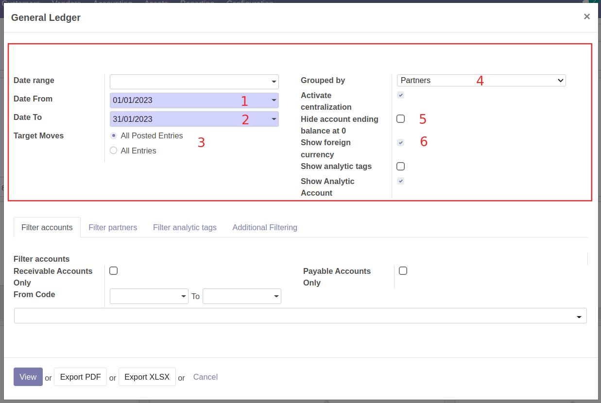
- (1) Date From: วันที่เริ่มต้นของการเรียกบัญชีแยกประเภท
- (2) Date To: วันที่สิ้นสุดของการเรียกบัญชีแยกประเภท
- (3) Target Moves:
- All Posted Entry เฉพาะรายการที่ลงบัญชีแล้ว
- All Entries ทุกรายการ
- (4) Grouped by: การจัดกลุ่มรายการเพื่ออกรายงาน ระบบแสดง Partner เป็นค่าเริ่มต้น
- (5) Hide account ending balance at 0: ทำเครื่องหมาย หากต้องการซ่อนบัญชีที่มียอดคงเหลือเป็น 0
- (6) Show foreign currency: ทำเครื่องหมาย หากต้องการแสดงรายการสกุลเงินต่างประเทศ กรณีมีการบันทึกเป็นสกุลเงินต่างประเทศ
-
แท็บกรองข้อมูลการออกรายงาน สามารถเลือกกรองได้ดังนี้
-
Filter accounts เลือกกรองบัญชีที่ต้องการออกรายงาน 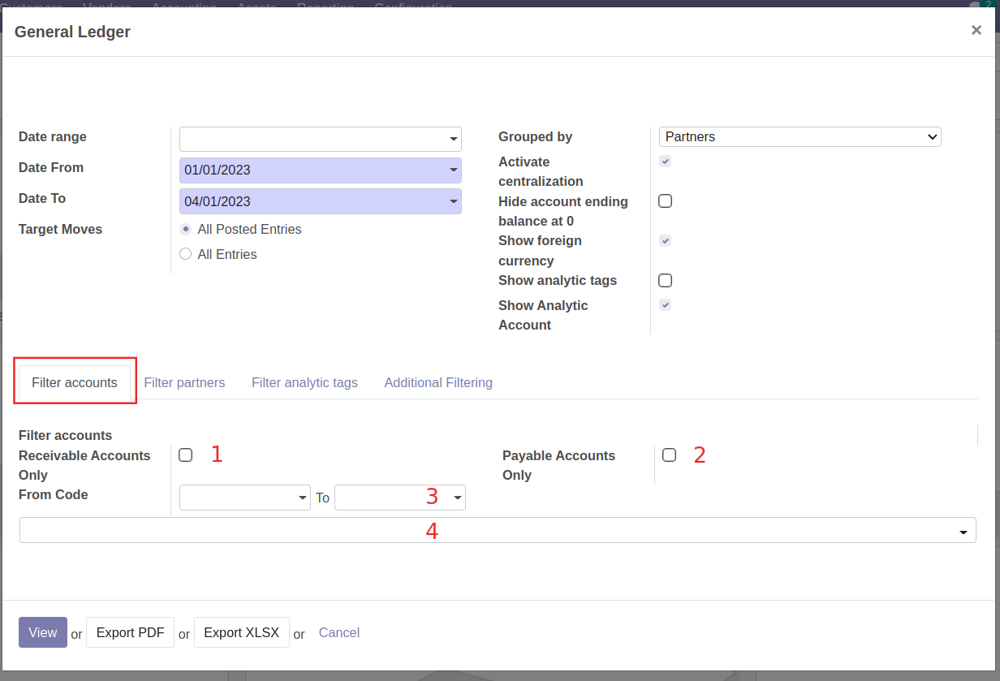
- (1) Receivable Accounts Only: ทำเครื่องหมาย เมื่อต้องการออกรายงานบัญชีลูกหนี้
- (2) Payable Accounts Only: ทำเครื่องหมาย เมื่อต้องการออกรายงานบัญชีเจ้าหนี้
- (3) From Code .. to .. : เลือกช่วงรหัสบัญชีที่ต้องการออกรายงาน
- (4) ค้นหาเลขที่บัญชีที่ต้องการออกรายงาน โดยสามารถเลือกได้มากกว่า 1 บัญชี สามารถกดปุ่มกากบาทเพื่อลบรายการได้
-
Filter partners เลือกกรองคู่ค้าที่ต้องการออกรายงาน 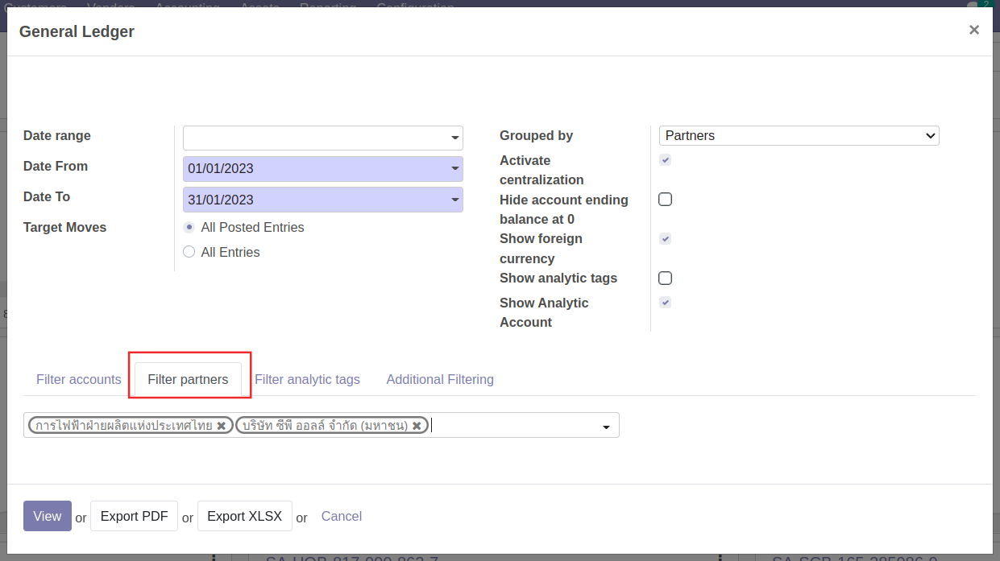
- ค้นหาและเลือกคู่ค้าที่ต้องการออกรายงาน โดยสามารถเลือกได้มากกว่า 1 รายการ สามารถกดปุ่มกากบาทเพื่อลบรายการได้
-
-
เลือกวิธีการดูรายงาน 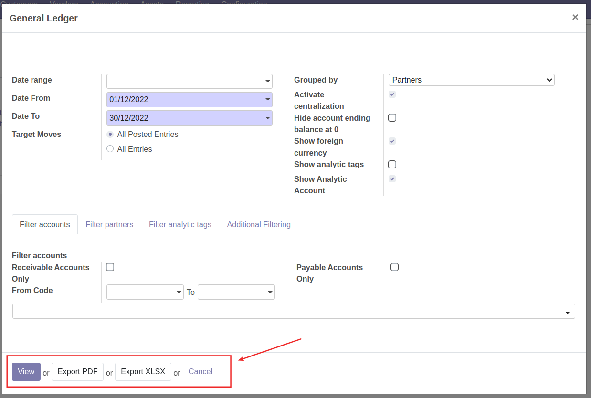
- View: เพื่อดูรายงานในระบบ
- Export PDF: ระบบจะออกรายงานเป็น PDF File
- Export XLSX: ระบบจะออกรายงานเป็น Excel file
- Cancel: ยกเลิกการเรียกดูรายงาน
Note
หากต้องการดูรายงานบัญชีแยกประเภท (General Ledger) บนระบบ สามารถดูรายงานได้อีกช่องทาง คือ ที่เมนู Invoicing > Accounting > General Ledger หรือ Partner Ledger 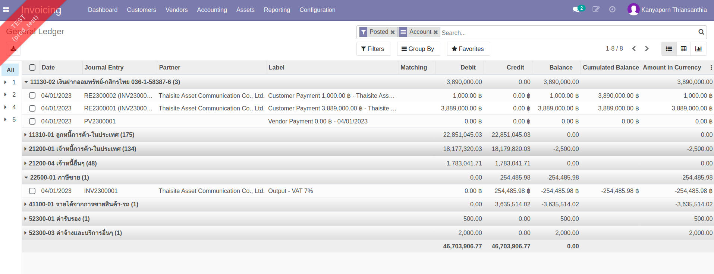
Trial Balance (TB) งบทดลอง
Menu: Invoicing > Reporting > Trial Balance
เมื่อกดที่เมนู Trial Balance ระบบจะแสดงหน้าต่างเงื่อนไขการเรียกรายงาน
-
กรอกข้อมูลเพื่อเรียกรายงาน 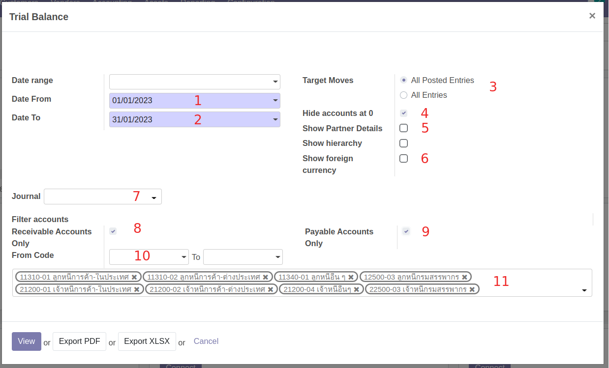
- (1) Date From: วันที่เริ่มต้นรายงาน
- (2) Date To: วันที่สิ้นสุดรายงาน
- (3) Target moves:
- All Posted Entry เฉพาะรายการที่ลงบัญชีแล้ว
- All Entries ทุกรายการ
- (4) Hide accounts at 0: ทำเครื่องหมาย หากต้องการซ่อนบัญชีที่มียอดคงเหลือเป็น 0
- (5) Show Partner Details: ทำเครื่องหมาย หากต้องการดูบัญชีที่เป็นเจ้าหนี้และลูกหนี้
- (6) Show foreign currency: ทำเครื่องหมาย หากต้องการแสดงรายการสกุลเงินต่างประเทศ กรณีมีการบันทึกเป็นสกุลเงินต่างประเทศ
- (7) Journal: กรองประเภทของสมุดรายวัน
- (8) Receiveable accounts: ทำเครื่องหมาย เมื่อต้องการออกรายงานบัญชีลูกหนี้
- (9) Payable accounts: ทำเครื่องหมาย เมื่อต้องการออกรายงานบัญชีเจ้าหนี้
- (10) From Code .. to .. : เลือกช่วงรหัสบัญชีที่ต้องการออกรายงาน
- (11) ค้นหาเลขที่บัญชีที่ต้องการออกรายงาน โดยสามารถเลือกได้มากกว่า 1 บัญชี สามารถกดปุ่มกากบาทเพื่อลบรายการได้
-
เลือกวิธีการดูรายงาน 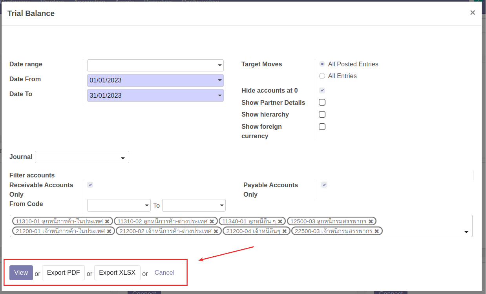
- View: เพื่อดูรายงานในระบบ
- Export PDF: ระบบจะออกรายงานเป็น PDF File
- Export XLSX: ระบบจะออกรายงานเป็น Excel file
- Cancel: ยกเลิกการเรียกดูรายงาน
Open Item รายการคงค้าง
Menu: Invoicing > Reporting > Open Items
เมื่อกดที่เมนู Open Items ระบบจะแสดงหน้าต่างเงื่อนไขการเรียกรายงาน
-
กรอกข้อมูลเพื่อเรียกรายงาน 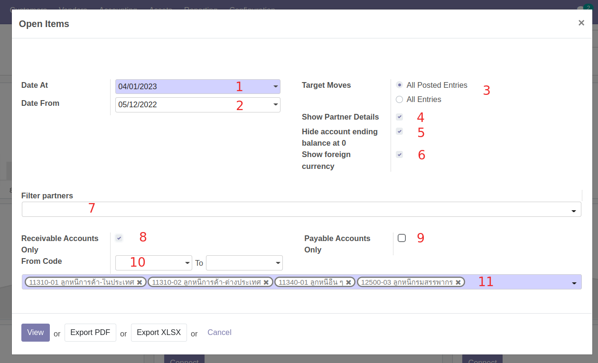
- (1) Date At: วันที่สิ้นสุดรายงาน
- (2) Date From: วันที่เริ่มต้นรายงาน
- (3) Target moves:
- All Posted Entry เฉพาะรายการที่ลงบัญชีแล้ว
- All Entries ทุกรายการ
- (4) Show Partner Details: ทำเครื่องหมาย หากต้องการดูบัญชีที่เป็นเจ้าหนี้และลูกหนี้
- (5) Hide accounts at 0: ทำเครื่องหมาย หากต้องการซ่อนบัญชีที่มียอดคงเหลือเป็น 0
- (6) Show foreign currency: ทำเครื่องหมาย หากต้องการแสดงรายการสกุลเงินต่างประเทศ กรณีมีการบันทึกเป็นสกุลเงินต่างประเทศ
- (7) Filter partners: เลือกกรองชื่อคู่ค้าที่ต้องการออกรายงาน
- (8) Receiveable accounts: ทำเครื่องหมาย เมื่อต้องการออกรายงานบัญชีลูกหนี้
- (9) Payable accounts: ทำเครื่องหมาย เมื่อต้องการออกรายงานบัญชีเจ้าหนี้
- (10) From Code .. to .. : เลือกช่วงรหัสบัญชีที่ต้องการออกรายงาน
- (11) ค้นหาเลขที่บัญชีที่ต้องการออกรายงาน โดยสามารถเลือกได้มากกว่า 1 บัญชี สามารถกดปุ่มกากบาทเพื่อลบรายการได้
-
เลือกวิธีการดูรายงาน 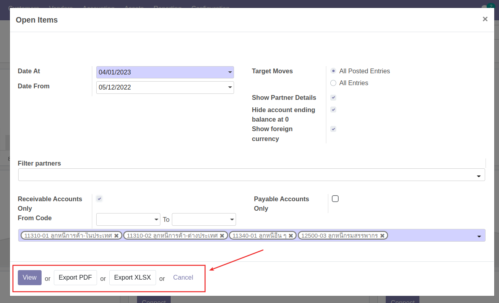
- View: เพื่อดูรายงานในระบบ
- Export PDF: ระบบจะออกรายงานเป็น PDF File
- Export XLSX: ระบบจะออกรายงานเป็น Excel file
- Cancel: ยกเลิกการเรียกดูรายงาน
MIS report
Menu: Invoicing > Reporting > MIS report
ที่เมนู MIS Report สามารถเรียกดูรายงานได้ ดังนี้
- Balance Sheet (BS) งบแสดงฐานะทางการเงิน
- Profit & Loss (PL) งบกำไรขาดทุน
โดยสามารถเรียกดูรายงานโดยมีขั้นตอนดังนี้
-
กดปุ่ม Create เพื่อสร้างเอกสารการเรียกรายงาน 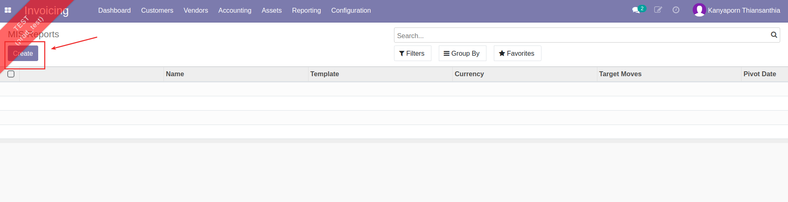
-
กรอกข้อมูลเพื่อเรียกรายงาน 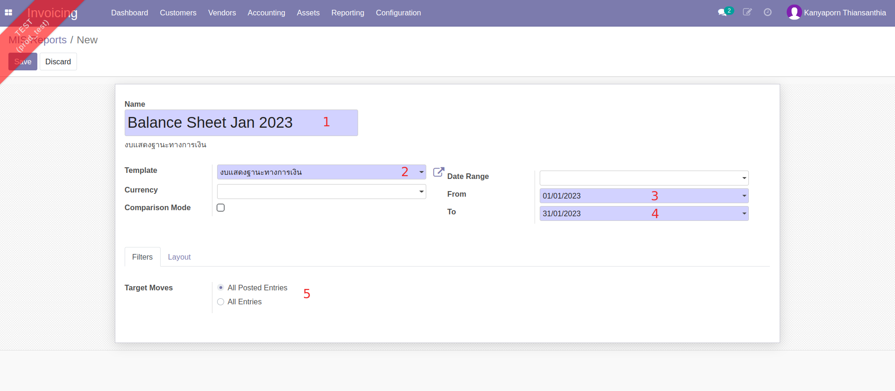
- (1) Name: ตั้งชื่อรายงาน
- (2) Template: เลือกรูปแบบรายงานที่ต้องการเรียกดู
- งบแสดงฐานะทางการเงิน
- งบกำไรขาดทุน
- (3) Date From: วันที่เริ่มต้นรายงาน
- (4) Date To: วันที่สิ้นสุดรายงาน
- (5) แท็บ Filters เลือก Target Moves
- All Posted Entry เฉพาะรายการที่ลงบัญชีแล้ว
- All Entries ทุกรายการ
-
ตรวจทานข้อมูลการเรียกรายงาน และกดปุ่ม Save เพื่อบันทึก 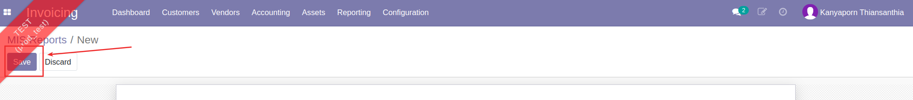
-
เลือกวิธีเรียกดูรายงาน 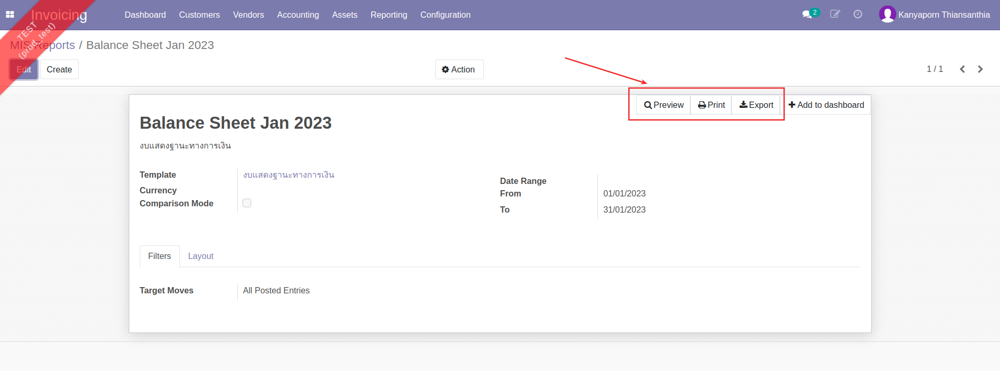
- Preview: แสดงหน้ารายงานในระบบ โดยสามารถกดที่ตัวเลขเพื่อดูรายละเอียดรายการที่เกี่ยวข้องได้
- Print: ดาวน์โหลดรายงาน ในรูปแบบไฟล์ PDF
- Export: ดาวน์โหลดรายงาน ในรูปแบบไฟล์ Excel
Aged Partner Balance รายงานอายุลูกหนี้/เจ้าหนี้
Menu: Invoicing > Reporting > Aged Partner Balance
เมื่อกดที่เมนู Aged Partner Balance ระบบจะแสดงหน้าต่างเงื่อนไขการเรียกรายงาน
-
กรอกข้อมูลเพื่อเรียกรายงาน 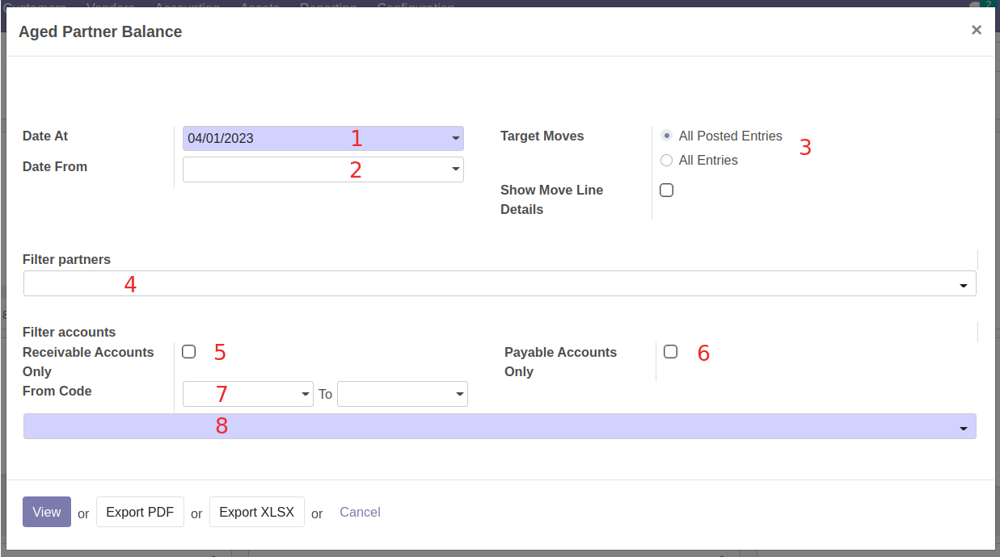
- (1) Date At: วันที่สิ้นสุดรายงาน
- (2) Date From: วันที่เริ่มต้นรายงาน
- (3) Target moves:
- All Posted Entry เฉพาะรายการที่ลงบัญชีแล้ว
- All Entries ทุกรายการ
- (4) Filter partners: เลือกกรองชื่อคู่ค้าที่ต้องการออกรายงาน
- (5) Receiveable accounts: ทำเครื่องหมาย เมื่อต้องการออกรายงานบัญชีลูกหนี้
- (6) Payable accounts: ทำเครื่องหมาย เมื่อต้องการออกรายงานบัญชีเจ้าหนี้
- (7) From Code .. to .. : เลือกช่วงรหัสบัญชีที่ต้องการออกรายงาน
- (8) ค้นหาเลขที่บัญชีที่ต้องการออกรายงาน โดยสามารถเลือกได้มากกว่า 1 บัญชี สามารถกดปุ่มกากบาทเพื่อลบรายการได้
-
เลือกวิธีการดูรายงาน 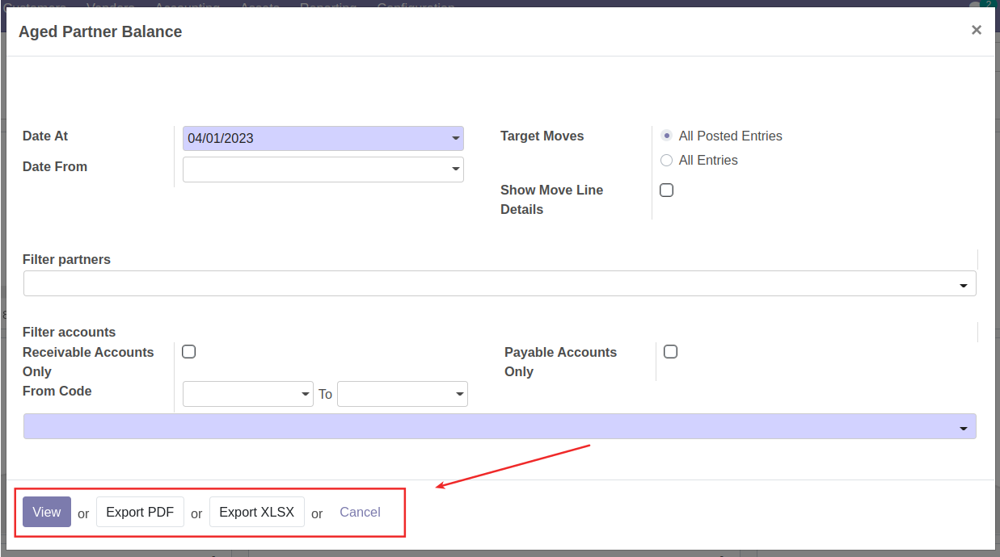
- View: เพื่อดูรายงานในระบบ
- Export PDF: ระบบจะออกรายงานเป็น PDF File
- Export XLSX: ระบบจะออกรายงานเป็น Excel file
- Cancel: ยกเลิกการเรียกดูรายงาน